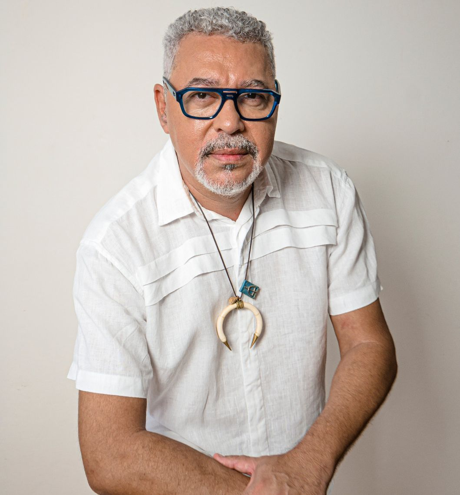
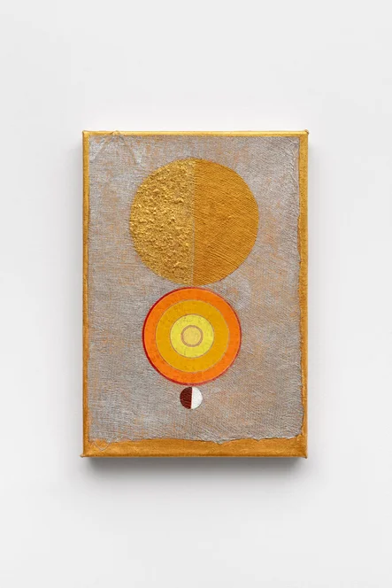
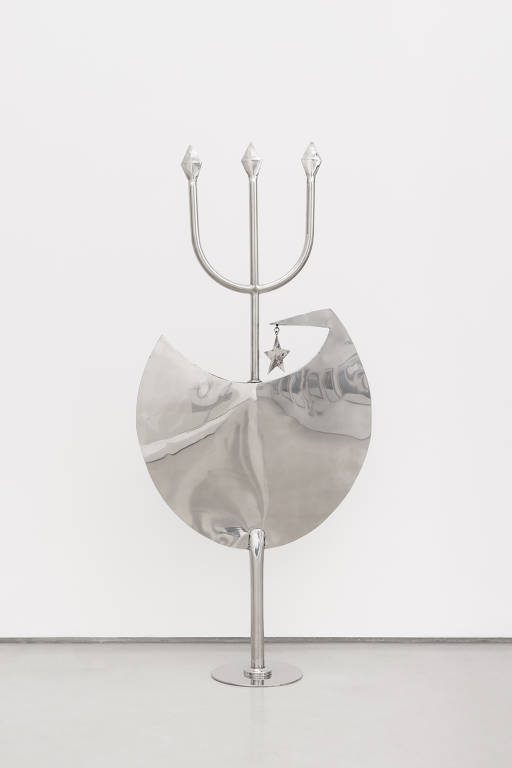
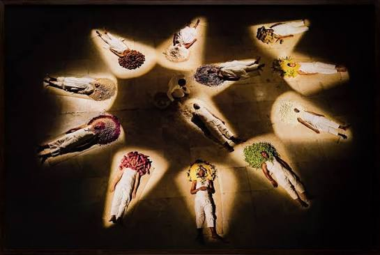

Ayrson Heráclito
(Macaúbas, Bahia, 1968–presente)
É um destacado artista visual, curador, professor universitário e Ogã Sojatin do Candomblé (Jeje-Mahi). Doutor em Comunicação e Semiótica pela PUC-SP e mestre em Artes Visuais pela UFBA, leciona na Universidade Federal do Recôncavo da Bahia (UFRB) e atua entre Cachoeira e Salvador.
- Trajetória e Linguagens: Iniciou sua carreira na pintura nos anos 1980 e expandiu sua poética para instalações, performances, fotografias e vídeos.
- Sagrado e Ancestralidade: Sua produção conecta os saberes das religiões de matriz africana à história e à cultura afro-brasileira, abordando espiritualidade, cura e resistência sem revelar os segredos litúrgicos do terreiro.
- Materiais Simbólicos: Utiliza elementos orgânicos e rituais como dendê, açúcar, carne de charque, pipoca, folhas, sangue e sal para discutir a memória da escravidão e a diáspora africana.
- Projeção Internacional: É autor de séries icônicas como Bori e Sacudimento, tendo representado o Brasil e a arte afro-diaspórica em grandes mostras globais, como a Bienal de Veneza e a Bienal de São Paulo.
Obras em Destaque na Exposição

Videoperformance e fotografia ritual realizada nas ruínas coloniais da Casa da Torre de Garcia d'Ávila (Bahia). O artista utiliza folhas sagradas e ritos do Candomblé para promover a purificação e a cura histórica das marcas da escravidão.

No Candomblé, o juntó representa a segunda divindade que acompanha a cabeça do iniciado. Nesta série de esculturas e aquarelas, o artista articula e entrecruza ferramentas sagradas e símbolos litúrgicos dos orixás, investigando os laços espirituais e as energias ancestrais.

Apresentada em instituições como a Pinacoteca de SP e o MAR, esta performance ritualística e filme encena a oferenda sagrada de alimentos às cabeças de doze performers que personificam os orixás, nutrindo a consciência cósmica (Ori) e promovendo a cura e o equilíbrio espiritual.